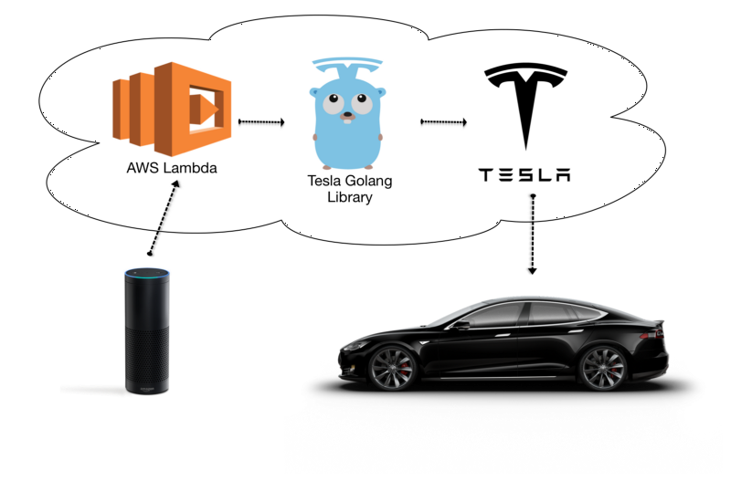

Hello World
CodeTengu Weekly 碼天狗週刊
CodeTengu Weekly 會在 GMT+8 時區的每個禮拜一早上 10:00 出刊，每一期會從目前的 curator 名單中選出三位來負責當期的內容，每一位 curator 各自負責不同的領域，如果你在這一期沒有看到自已感興趣的東西，說不定下一期就會有了。
你也可以瀏覽一下前幾期的內容，有價值的東西是不會過時的。
以下是目前的 curator 陣容：
- @vinta - I failed the Turing Test - 喜歡科幻小說，最近在讀「平面國」
- @saiday - Imnotyourson - 捷運飲食推廣委員會
- @tzangms - Oceanic / 人生海海 - 衝動型購物
- @fukuball - ImFukuball - 徵 Android 工程師，意者內洽
- @wancw - 繼續寫 LeetCode 可能會生出一套 Unit Test 框架
- @adamp33 - 看棒球才是正職，副業是前端工程師
- @mingderwang
- @kako0507 - 熱愛嘗試新事物的前端工程師
- @chiahsien - Nelson
- @hiroshiyui - 非典型司書
- @uranusjr - Smaller Things - 聽說這是技術週刊，可是我不愛談技術怎麼辦
- @kkdai - 態度萬歲 - 喜歡 Golang 的略懂工程師
大家也可以 follow 一下 CodeTengu 的 Facebook、Twitter 或 GitHub，有很多 Weekly 看不到的內容。有任何建議或疑問也可以來 Gitter 聊一聊，歡迎亂入 👺
 @tzangms
@tzangms
What does Unsplash cost?
Unsplash 是一個提供高質量照片而且可以免費使用 (do whatever you want) 的網站, 一直以來, 我的部落格 每發一篇文章就都會從這個網站找一張圖片搭配。
其實我一直以為這網站似乎不太需要花錢, 一直到看了這篇文章才覺得實在太驚訝了, 這樣一個簡單的網站, 每個月居然要花上高達快 60萬台幣 :o
不過當然得說一下, 他們的架構是朝著省時、省力的方向走, 這也是一種方式。
The Internet Economy
作者畫了一張圖來表達現在的 (美國) 網路經濟流向, 以及現在網路經濟被五大公司 (Google, Apple, Facebook, Amazon, and Microsoft) 所掌握。
我覺得當中比較有趣的是這一點, 提到 Amazon 是 Google 的主要威脅
it might seem counterintuitive that Amazon is a major threat to Google’s core search business.
論點大致上是這樣: 人們使用 Google 搜尋產品來進行購物, Google 透過搜尋來賣廣告, 而廣告通常是賣東西的人下廣告比較多, 不過 Amazon 的購物體驗比起其他商城好, 所以人們開始傾向直接上 Amazon, 跳過 Google 搜尋... 挺有道理的啊...
Unintuitive Things I’ve Learned about Management (Part 1)
雖然管理的文章看多了, 似乎就是那樣, 不過這篇我覺得寫的還是不錯, 還是推薦大家看看。其中印象比較深刻的是這一點
To evaluate the strength of a manager, look at the strength of their team.
也記得看 Part 2
 @uranusjr
@uranusjr
The one thing every programmer should do to succeed in the tech industry
如果想在科技界成功，記得做一件事：寫作。這能讓你表達自己的意見——尤其如果你不擅長在公開場合說話。
學習寫作可以讓工程師更容易向管理階層、甚至客戶解釋自己的工作。當你完成一個系統後，會需要用人類的語言解釋它；好的說明文章也會成為現成的廣告，一來提高作品能見度，二來提升使用者的使用慾——更多使用者代表更多找到問題的機會，對軟體本身的品質也有很大幫助。
當然，軟體工程師本職還是寫程式，所以當不成文豪什麼的也沒關係。但千萬記得保留一些技能點給它。
Programming by Poking: Why MIT Stopped Teaching SICP
最近幾年 MIT 放棄使用經典《電腦程式的構造和解釋》（Structure and Interpretation of Computer Programs，通稱 SICP）作為計算機概論的教科書，開始用 Python 取代 SICP 使用的 Scheme，當作 CS 學生的入門語言。Yarden Katz 在這篇文章中稍微解釋了原因：Sussman 和 Abelson（SICP 的作者）不想繼續教，以及 SICP 的內容不再適合現代的工程概念，無法讓學生獲得成為當代軟體工程師所需的技能。
根據 Gerry Sussman（SICP 作者與授課教授之一）的說法，SICP 成書時的軟體工程需要從頭開始打造一個系統，但今天的工程師絕大時間都花在自己不了解（也不可能了解）的軟硬體技術上。Sussman 觀察到他的學生把大量時間花在閱讀文件，好把不同的現成元件接合在一起，讓它們能一起運作。用他的話講：
[現在的程式設計] 更像科學。你拿到一個程式庫，然後擺弄它。你寫一個程式，然後擺弄它，觀察它的運作結果。然後你就能問『我能不能調整它達成我的需求？』
SICP 的方法開始與當代的工程需求脫節，所以他們決定拋棄它。Python 因為擁有包山包海的函式庫，能夠適應講師希望教授的各種應用，而被選為新的教材。
不過即使不再是入門的最佳方法，SICP 本身仍然是經典，值得一看（我承認我沒讀過）。書的內容完全公開，Sussman 和 Abelson 的授課也有錄影。
Makefile Assignments are Turing-Complete
這年頭好像沒什麼人自己手寫 Makefile 了，一般程式 project 會因為平台支援轉用 meta-make system 例如 CMake 與 SCons，即使原本 Makefile 的 niche——單一 target platform 的 build dependency management——也被更潮的工具取代，例如什麼 Grunt 啊這不潮了是 Gulp 啊這也不潮我是說 Webpack。是說好像前年 COSCUP 吧，我聽了個介紹當時很夯的 build system 的 talk，聽到一半就忍不住跟隔壁的人說『啊這就是 Makefile 啊』。
真的，Makefile 很厲害。而且它是 Turing-complete，也就是說你能想得 build tool 該辦到的事情，它都辦得到——甚至你覺得它不該辦到的也可以，例如用來實作康威生命遊戲！？
當然「辦得到」和「你該用它辦到」是兩件事，特定的狀況還是該用特定的工具（文章裡也舉了個著名的 x86 mov 是 Turing-complete 例子），一切都視情況而定。但為了一個簡單的任務，與其費盡千辛萬苦裝 node 裝 npm 再裝那個你心愛的 build system，用一個幾乎所有 Linux distributions 都預裝、OS X 和 Windows 也只要裝任何開發工具就會送你的東西，好像還更方便呢。
Classic Programmer Paintings
《償還技術債》
這個 Tumblr 收集了許多經典畫作，並為它們加上一個 programmer 取向的標題。其他我特別喜歡的還有像《Haskell meetup》、《第一次 code review》、《Sysadmin 確認 RFC2822 是否確實允許向所有收件人發佈 BCC 欄位》等等。
 @kkdai
@kkdai
讓你 Go 程式碼變得更好的工具集 (Tools to Help you Go)
Golang 讓人喜歡的許多原因之一，就是有著許多好用的工具可以讓你在撰寫 Go 的時候更加的輕鬆而方便． 舉個最間單的例子，就是 coding style tool goimport 他可以讓你在存在之後，自動把 coding style 改成 Golang community 所習慣的範例． 當然還有好用到不行的 guru 可以幫助你查詢 caller 與 callee．除了這兩個之外，這一篇有介紹更多的工具:
- Golint : 可以自動幫你檢查所有程式碼中潛在的語法問題．
- Gocyclo : 可以幫你計算你程式碼中的循環複雜度（Cyclomatic complexity）避免有過多的迴圈運算．
- Depscheck : 可以幫你產生相依性的報表，讓你可以思考有多少小套套件是相依其他人的．經過了 NPM 的 LeftPad 事件之後．其實不少人建議如果相依的套件太小，不仿自己寫過來吧．
- errcheck : 這個套件可以幫你檢查你的程式碼有沒有對於每個錯誤都有相對應的檢查與處理．避免明明有 error 卻沒有檢查的潛在問題．
- safesql : SQL Injection 是每個人在撰寫後端與資料庫橋接程式的時候最擔心的問題．這個工具可以幫你檢查看看有沒有危險的語法存在．
雖然 Golang 社群提供了許多的工具來幫助你，其實 Golang 本身的 Compiler 已經相當的強勢．會幫你檢查出許多潛在的問題．除了這些工具之外，當然相信自己與撰寫單元測試的好習慣都是可以幫助讓你的程式變得更好的不二法門．
[Golang] 深入研究 Visual Studio Code for Golang
筆者要推薦自己的一篇文章．主要就是推薦最近剛剛成為 1.0 正式版的 Visual Studio Code ，如果你有開發 Windows 應用程式的經驗，那麼你可能使用過 Visual Studio 而 Visual Studio Code 是基於 Visual Studio 類似的使用者習慣並且基於 atom.io 的編譯器原始碼所開發而成．
本篇文章不僅僅介紹了該如何開始使用 VS Code for Golang ，更將筆者比較常使用的一些熱鍵與設定檔分享出來．希望能讓習慣於使用其他編輯器開發 Golang 的使用者可以更快速上手．
如果你目前的開發編輯器是 Sublime-Text ，那麼你切換到 VS Code 會相當的順利並且快速．如果你目前的 atom.io 那麼你也可以試試看，不少開發者都說切換過去後的開發速度整個變快了不少． 如果你目前開發編輯器是 VIM ，也建議你試試看他的 debugger ．透過 delve 並且與 VS 相似的除錯介面，可以讓你解決問題更快上手．
Dan Grover: "Bots won't replace apps. Better apps will replace apps."
這裡有官方中文版可以看: "Bot 不会取代 app，更好的 app 才会" ，作者是微信的 PM (美國人 !!)
作者認為不論 Bot 多麼的具有智慧， 相對於 App的圖形介面，跟 Bot 對話就像是 以前時代的 DOS 命令列一樣，需要不斷地下指令． 而操作 App 就像是後來出的 Windows 視窗介面 (GUI) ．後者永遠不會被前者取代，但是如何讓使用者更容易與有效的使用你的服務才是重點．
小編這幾週將一些的 Bot Framework 都玩了一下，包含微軟的 Bot Framework，臉書的 Messenger Platform 還是 Line Bot API ．其實聊天機器人並不是新的概念，從 IM 軟體出來的第一天就有了．但是透過現今不少的自然語音系統的輔助 (不論是微軟的 LUIS 或是被臉書收購的 wit.ai 都可以讓你的聊天機器人變得更加 "有人性"．更快能在最少的交談中去了解每個使用者的需求．
最後，要開發 IM 的機器人不難，但是你希望它能幫你做些什麼? 要簡單的資料檢索，還是要複雜一點的 ChatOps ? 端看每個開發者的創造力．
最後，列出一些 Bot 相關的 Go 專案:
NYTimes/openapi2proto: A tool for generating Protobuf v3 schemas and gRPC service definitions from OpenAPI specifications
NYTimes!!! 恩，你沒有看錯．是 1851 年創立的紐約時報． 其實紐約時報發佈了相當多好用的 Golang 專案，不論是 Microservice Kit "gizmo" 或是 Zip 的 middle wrapper "gziphandler" ． 讓我又為了這家公司而驚艷!
最近他們發佈了 openapi2proto 可以將 OpenAPI 或是 Swagger 的定義檔轉換成 Protobuf v3 給 GRPC 使用．
[G0V][Pet Need Me] 透過 Line 來查看動物收容所流浪動物的資料，並且來領養這些動物吧
收容所的狗，每一隻其實都曾經是你我的寶貝．他們透過不同的原因進了收容所，卻因為得不到適當得收容得要走向安樂死的路．
這就是我寫這個 Line 機器人的原因，希望大家有事沒事可以滑滑 Line 看看有沒有你喜歡的朋友，一起帶他回家好嗎？
整個機器人架構主要是透過 Golang 來寫，並且架設在 Heroku 上面．如果你也想要架設自己的 Line 機器人，不仿看看我的另外一篇教學文章．
主要功能:
目前僅僅支援顯示台北市流浪動物資料，並且顯示該動物圖片．打入任何文字就會依序顯示．
資料來源:
Random Cool Stuff

Commanding a Tesla Model S with the Amazon Echo "透過語音控制你的電動車 Tesla S 駛出車庫"
"Tesla 電動車" 加上 "語音控制" 加上 "AWS" 加上 "Golang" 有沒有搞頭？
沒錯，就是像撒尿牛丸一樣新奇又好玩． 這篇介紹了幾個新的玩具：
- Amzon Echo : 不僅僅可以當你的喇叭， Echo 更可以讓你使用語音來與世界溝通．不論是訂披薩，買東西，叫 Uber，到現在這個例子：啟動你的車子．
- AWS Lambda : Amazon 的雲端服務也就是近來大家再提的 Serverless Computing ，似乎不該說是玩具．可能不少讀者上班都得每天追著他跑．
- Golang : 程式設計師的好工具，剛成立滿六年的 Golang 已經是不少網路服務的主要構成語言．(大家一起來玩)
- Tesla S : 男人的大玩具，特斯拉的 S 款電動車．
這一篇文章透過一個非正式的 Tesla API 來控制車子的行動．並且透過 Amazon Echo 與相關的 AWS Lambda 溝通後來呼叫 Golang Tesla API，並且透過該 API 來跟自己的 Tesla S 車款溝通．並且讓車子自己開出車庫．
不少朋友表示: 是說寫個 Open Source 有必要那麼炫富嗎? XDDD
由 @kkdai 分享。